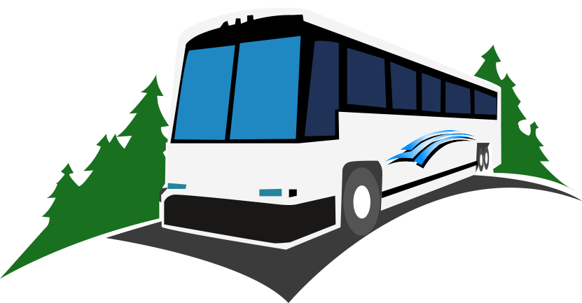

<!--
  Generated template for the LoginPage page.

  See http://ionicframework.com/docs/components/#navigation for more info on
  Ionic pages and navigation.
-->
<ion-header>

  <ion-navbar>
    <ion-title></ion-title>
  </ion-navbar>

</ion-header>


<ion-content padding>
  <ion-list style="margin-top:0%">
    
    
    <h1>Select Route</h1>

    <button ion-button full round *ngFor='let route of routes' (click)="loadMap(route)">Route {{route['bus']}}</button>
  
  </ion-list>
</ion-content>